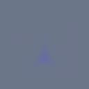
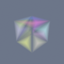
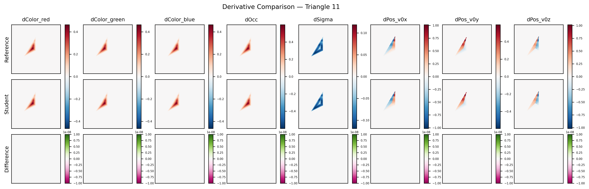
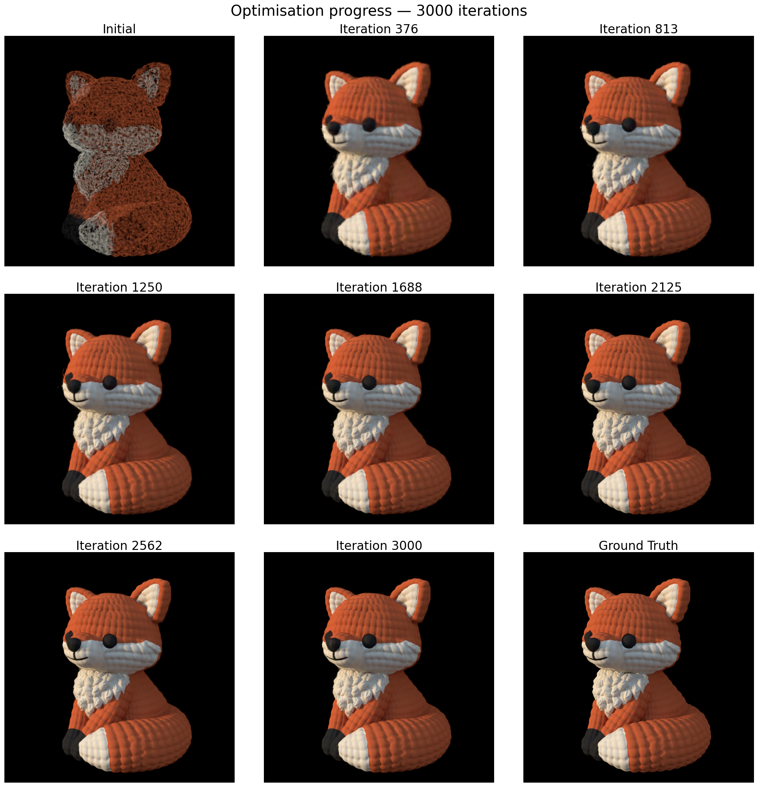
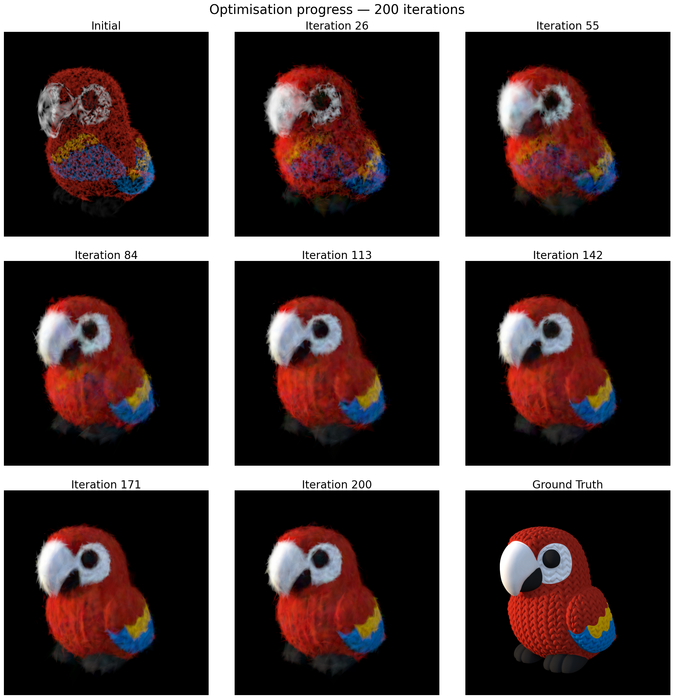

\(\sigma = 1\), occ = 1

\(\sigma = 5\), occ = 1

\(\sigma = 10\), occ = 1
{kind=link}
{kind=link}

\(\sigma = 5\), occ = 0.2
In this assignment you will implement the core rendering and optimisation components of Triangle Splatting (Held et al., 2025), a differentiable inverse-rendering method that represents a scene as a "soup" of semi-transparent, emissive triangles. Unlike classical mesh-based renderers where triangles are opaque surface elements, triangle splatting treats each triangle as a soft, coloured light source whose contribution fades smoothly from centre to edges according to a learnable window function.
You will work inside the trianglesoup Python package, which is built on top of Mitsuba 3 and Dr.Jit. Mitsuba 3 is a research-oriented rendering system that provides scene representation, ray tracing, and a differentiable rendering API (docs). It is built on top of Dr.Jit, a just-in-time compiler for array programming that provides automatic differentiation and GPU acceleration (docs, basics). The training loop, dataset loading, variable management, and optimiser are provided for you. Your job is to fill in the rendering and differentiation core.
As usual, begin by importing the latest base code updates into your repository by running
$ git pull upstream main
If there were any concurrent changes to the same file, you may have to perform a merge (see the git tutorials under "Preliminaries" for more information).
This assignment lives in the trianglesoup/ subfolder
of your repository. It uses a separate Python environment managed
by pixi. If you do not have pixi
installed yet, follow the
pixi
installation instructions. Then navigate into the folder
and install the environment:
$ cd trianglesoup $ pixi install
All pixi run commands below should be executed from
the trianglesoup/ directory. The base code uses
mi.set_variant("cuda_ad_rgb", "llvm_ad_rgb"): if
you have an NVIDIA GPU, computations will run on CUDA, otherwise
they fall back to LLVM (CPU).
triangle_model.py and integrator.py.
In classical rendering, a ray either hits a triangle or it does not; the contribution is binary. Triangle splatting replaces this hard boundary with a smooth window function that makes each triangle's contribution fade from full strength at the centre to zero at the edges. This is critical: without it, the scene would consist of fully opaque triangles that cannot be "softened" by optimisation.
The paper defines the window function as \[ I(\mathbf{p}) = \operatorname{ReLU}\!\left(\frac{\varphi(\mathbf{p})}{\varphi(\mathbf{s})}\right)^{\!\sigma} \] where \(\varphi(\mathbf{p})\) is the signed distance from \(\mathbf{p}\) to the nearest edge, \(\mathbf{s}\) is the Steiner point (the point of maximum inscribed distance), and \(\sigma\) is a per-triangle learnable sharpness parameter.
In barycentric coordinates \((b_0, b_1, b_2)\) with \(b_0 + b_1 + b_2 = 1\), the signed distance from a point to edge \(i\) is proportional to the barycentric coordinate of the opposite vertex, scaled by the edge length. The ratio \(\varphi(\mathbf{p}) / \varphi(\mathbf{s})\) then simplifies to: \[ \frac{\varphi(\mathbf{p})}{\varphi(\mathbf{s})} \;=\; \min\!\big(b_0\,w_0,\; b_1\,w_1,\; b_2\,w_2\big), \qquad w_i = \frac{P}{a_i}, \] where \(P = a_0 + a_1 + a_2\) is the perimeter and \(a_i\) is the length of the edge opposite vertex \(i\).
The full window function is therefore: \[ I(\mathbf{p}) \;=\; \operatorname{clip}\!\Big( \min\!\big(b_0\,w_0,\; b_1\,w_1,\; b_2\,w_2\big),\; 0,\; 1 \Big)^{\!\sigma} \]
Your task is to implement the window function \(I(\mathbf{p})\)
defined above in the
_window_function(si, active) method of
TriangleModel, located in
trianglesoup/rendering/triangle_model.py.
The skeleton already provides the per-triangle \(\sigma\), the
three vertex positions, and the barycentric coordinates at the
hit point.
dr.squared_norm,
dr.sqrt,
dr.minimum,
dr.clip, and
dr.power.
See the
Dr.Jit
basics page and the
API
reference for details.
Run the automated validation:
$ pixi run validate-part1
This renders single-triangle scenes with various \(\sigma\) and occupancy settings and compares against the following pre-generated references:

Include in your report: a side-by-side comparison of renders with \(\sigma = 1\), \(\sigma = 5\), and \(\sigma = 10\), and a brief explanation of why the window function is necessary for gradient-based optimisation.
The skeleton integrator only handles the first triangle hit along each ray. In triangle splatting, every triangle is semi-transparent: a ray passes through many triangles, accumulating colour along the way, much like volume rendering in Neural Radiance Fields (NeRF).
Given a ray that intersects triangles \(k = 0, 1, 2, \ldots\) in depth order, each with occupancy (opacity) \(\alpha_k\) and emission colour \(\mathbf{c}_k\), the accumulated radiance is: \[ L = \sum_{k=0}^{K} T_k \cdot \alpha_k \cdot \mathbf{c}_k + T_{K+1} \cdot L_{\mathrm{env}}, \] where \[ T_k = \prod_{j=0}^{k-1} (1 - \alpha_j) \] is the transmittance (the fraction of light that has not yet been absorbed), and \(L_{\mathrm{env}}\) is the environment radiance for rays that escape the scene.
Implement the alpha-compositing loop body in the
sample() method of
TriangleSoupEmissive
(trianglesoup/rendering/integrator.py). The
skeleton opens the rendering loop, intersects the ray, and
handles rays that escape to the background. Replace the
placeholder block with code that accumulates the per-hit
emission, advances the ray past the current hit, and updates
the throughput. For Part 2 you only need the primal
pass: plain forward rendering of the image with no gradient
bookkeeping. The backward branch (which propagates
derivatives) is covered in Part 3.
si.spawn_ray() to advance the ray origin.
spawn_ray offsets along the surface normal,
which can skip past nearby thin triangles and cause visible line
artefacts. Instead, offset by a small step along the ray
direction; a good choice is mi.math.RayEpsilon.
Run the automated validation:
$ pixi run validate-part2
This renders the reference cube from a corner viewpoint and compares your output against the pre-generated reference shown below. The cube should appear with soft, semi-transparent faces where back faces are visible through front faces, and the per-pixel difference against the reference should be negligible.

Include in your report: your rendered cube image and a brief explanation of why alpha compositing (rather than first-hit opaque rendering) is well-suited to gradient-based reconstruction from images in this triangle splatting setting.
With the forward integrator in place, you can render images. Now we turn to the actual goal of the assignment: optimising the triangle parameters so that rendered images match target images.
Let \(\theta\) denote the differentiable scene parameters we want to optimise: per-triangle colours, occupancies, sharpness \(\sigma\), and vertex positions. Write \(I(\theta)\) for the image rendered by your integrator at the current parameter values, and \(I^\star\) for the target image. We define the photometric loss \[ L(\theta) = \sum_{\text{pixels}\ p} \big\| I(\theta)_p - I^\star_p \big\|^2, \] and we want to find the parameters that minimise it: \(\theta^\star = \arg\min_\theta L(\theta)\).
The standard tool for this kind of non-linear optimisation is gradient descent (or a variant such as Adam). At each step we update the parameters along the negative gradient of the loss: \[ \theta \;\leftarrow\; \theta - \eta \, \nabla_\theta L(\theta). \] So the core problem of this part is to compute the gradient \(\nabla_\theta L\). Because \(L\) depends on \(\theta\) through an entire ray-tracing loop, this is not something we can write down in closed form; we need a mechanical way to differentiate the rendering code.
Dr.Jit supports automatic differentiation (AD): you mark variables as differentiable, do some computation on them, and ask Dr.Jit to propagate gradients backwards. A minimal example:
import drjit as dr
import mitsuba as mi
mi.set_variant("cuda_ad_rgb", "llvm_ad_rgb")
x = mi.Float(2.0)
dr.enable_grad(x) # treat x as a leaf in the AD graph
y = x * x + 1 # Dr.Jit records the operations on x
dr.backward(y) # propagate ∂y/∂x back to x
print(dr.grad(x)) # → 4.0
When AD is active on a variable, Dr.Jit stores the computation graph of every downstream operation so that it can walk the graph backwards later. For more details, see the Dr.Jit AD docs.
dr.backward(loss) at the end of the loop
The obvious approach would be: enable gradients on all scene
parameters, run the full forward rendering, compute a photometric
loss against the target, and call dr.backward(loss).
Conceptually this is correct, but in practice it is essentially
a worst-case scenario for reverse-mode automatic differentiation,
and we need a smarter strategy.
Reverse-mode AD works by recording every intermediate value of the forward computation on a “tape”, then walking the tape backwards to accumulate gradients. Our forward computation, however, is a loop whose number of iterations is not known in advance: each ray keeps stepping through semi-transparent triangles until its throughput drops below threshold or it leaves the scene. Worse, the loop runs on the GPU with hundreds of thousands of rays in flight at the same time. Recording everything would mean conservatively provisioning enough memory for every intermediate of every iteration of every ray, which is an enormous tape for what is otherwise a fairly small computation.
The general lesson: when an algorithm to be differentiated contains a loop whose iteration count is data-dependent and cannot be unrolled, blindly applying AD is almost never the right thing to do. Compilers currently aren’t smart enough to derive an efficient backward pass on their own, so it is up to us to think about what the loop actually computes and implement its derivative directly.
For our integrator we use Path Replay Backpropagation (PRB), the standard differentiable-rendering pattern in Mitsuba 3. PRB’s idea is simple: the forward pass records only the final primal radiance; the backward pass then replays the same paths a second time, propagating gradients one iteration at a time. Memory stays bounded regardless of how long any individual path turns out to be.
PRB computes \(\nabla_\theta L\) in two passes that the training loop orchestrates:
(mode == dr.ADMode.Primal).
Your integrator renders the image exactly as in Part 2
and returns the primal radiance per pixel,
\(I(\theta)\).
(mode == dr.ADMode.Backward). The integrator is
called a second time, now with \(\delta L\) as an input.
It replays the same paths and, at every hit, backpropagates
the local contribution of that hit into the scene
parameters \(\theta\) before moving on.
What does "the local contribution of a hit" look like? Recall from Part 2 that at hit \(k\) a ray contributes the emission at this hit, \(E_k = T_k \alpha_k \mathbf{c}_k\), plus all subsequent radiance scaled by the transparency \(\tau_k = 1 - \alpha_k\) of the current triangle. Differentiating with respect to \(\theta\) therefore yields two contributions per hit:
Summing these over all hits, the PRB formula is \[ \nabla_\theta L = \sum_k \delta L \cdot \Big( \nabla_\theta E_k + R_k \cdot \frac{\nabla_\theta \tau_k}{\tau_k} \Big), \] where \(R_k\) is the radiance remaining from hit \(k\) onward along this ray.
In practice, the backward pass does the following inside the rendering loop, per iteration:
radiance from the
primal radiance returned by the forward pass (the framework
passes it in via state_in[0]).
radiance. After this subtraction,
radiance holds the remaining radiance
\(R_{k+1}\).
dr.backward to push gradients into the
parameters \(\theta\). The graph is discarded before the
next iteration, so memory stays bounded.
dr.resume_grad: recording only what we need
AD tracking inside the rendering loop is off by default,
so the primal-pass code you wrote for Part 2 produces no AD
graph. dr.resume_grad temporarily re-enables
tracking for the expressions inside its block. A minimal
example:
import drjit as dr
import mitsuba as mi
mi.set_variant("cuda_ad_rgb", "llvm_ad_rgb")
x = mi.Float(3.0)
dr.enable_grad(x)
with dr.suspend_grad():
a = x + 1 # NOT tracked
with dr.resume_grad():
b = x * x # TRACKED (AD re-enabled here)
dr.backward(b)
print(dr.grad(x)) # → 6.0 (∂b/∂x = 2x)
Gradients are suspended by default inside the
sample() method, so you only need
dr.resume_grad around the few expressions the
backward pass needs. The when=not primal flag
additionally makes the block a no-op during the primal pass.
Extend the loop body in
TriangleSoupEmissive.sample() to handle the backward
mode:
Run the automated validation:
$ pixi run validate-part3
This perturbs each differentiable parameter (colours, occupancy,
\(\sigma\), and vertex positions), backpropagates through your
integrator, and compares the resulting gradients against
pre-generated references (within a 10% relative tolerance). It
also renders per-parameter derivative images for a single
triangle of the cube scene and produces side-by-side
reference/student/difference figures under
output/validation/part3/. An example (triangle 11
of the cube) is shown below: each column shows how the rendered
image changes with respect to a different triangle parameter
(colour channels, occupancy, \(\sigma\), vertex positions), and
your computation of the derivative should match the reference.

Include in your report: the derivative comparison figure
produced by validate-part3 for at least one
triangle of the cube (e.g. triangle 11).
The optimiser can adjust triangle positions, colours, and opacities, but it cannot add or remove triangles. The Triangle Splatting paper addresses this with periodic pruning (removing triangles that contribute nothing) and densification (splitting or cloning high-contribution triangles). Both require per-triangle statistics collected during rendering.
For each triangle \(i\), we collect two quantities over all rendered pixels:
Because multiple pixels may hit the same triangle in parallel,
the statistics are accumulated using
dr.scatter_add.
See the
gather
/ scatter section of the Dr.Jit basics for a short primer
on how these memory-access primitives work.
Complete the Part 4 TODO in the rendering loop. At each hit, accumulate two quantities into the corresponding per-triangle buffer:
self.triangle_stats_weight_sum;
1
into self.triangle_stats_pixel_count.
The buffers and the
begin_triangle_statistics /
end_triangle_statistics helpers (the latter
divides the sum by the count to return the average weight) are
already provided.
Run the automated validation:
$ pixi run validate-part4
This renders a random triangle soup, collects per-triangle statistics through your integrator, and compares both the pixel hit counts and the average contribution weights against pre-generated references.
Once Parts 1–4 are in place, you have a complete differentiable triangle-soup renderer. Three reconstruction datasets are provided for end-to-end experiments: a fox, a macaw, and a Lego bulldozer (most challenging).
Source scenes live under data/scenes/. Each
folder contains a Mitsuba scene.xml, the
associated meshes/ and textures/, and
a preview image. The source scenes are not shipped
with the repository. Download them here:
scenes.zip,
and unpack into data/scenes/.
The training views are also not shipped with the repository. You have two options:
$ pixi run make-fox-dataset $ pixi run make-macaw-dataset $ pixi run make-lego-dataset # Or regenerate every dataset (cube + fox + macaw + lego) in one shot: $ pixi run make-datasets
data/datasets/.
Either way, the training and test views end up under
data/datasets/{fox,macaw,lego}/{train_images,test_images}/
as EXR files together with the corresponding camera poses in
train.json / test.json.
Two reconstruction recipes are provided per scene. Pick whichever fits your machine; either version is accepted for the report:
$ pixi run train-fox $ pixi run train-macaw $ pixi run train-lego
$ pixi run train-fox-cpu $ pixi run train-macaw-cpu $ pixi run train-lego-cpu
Each training run writes to
output/<experiment-name>/, containing:
initial_renders/{train,test}/: renders
before optimisation starts.final_renders/{train,test}/: renders after
the final iteration.metrics.json: per-iteration loss and
triangle count.progress_grid.png: a grid of rendered
snapshots at several iteration checkpoints alongside the
target view, so you can see how reconstruction evolves.
For each of the three scenes, include the
progress_grid.png produced by your reconstruction
run; this single image already captures target vs.
predicted views across the optimisation. Example progress
grids for the fox and macaw scenes are shown below.


{kind=link}
{kind=link}
{kind=link}
{kind=link}
{kind=link}
{kind=link}
{kind=link}